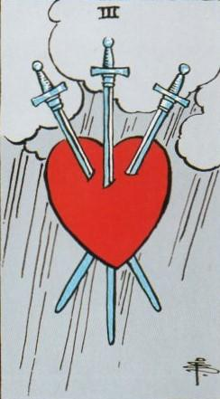
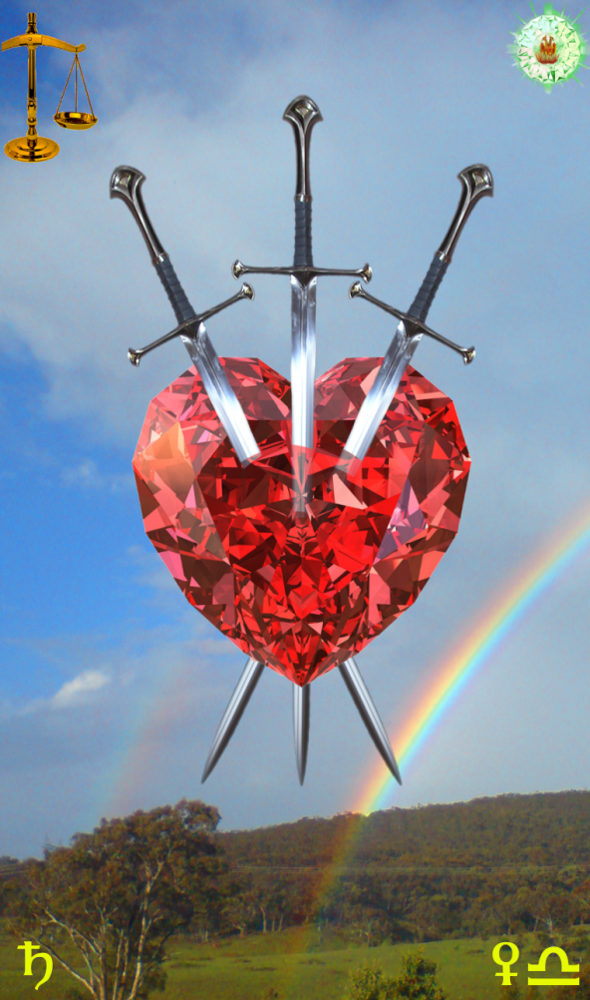
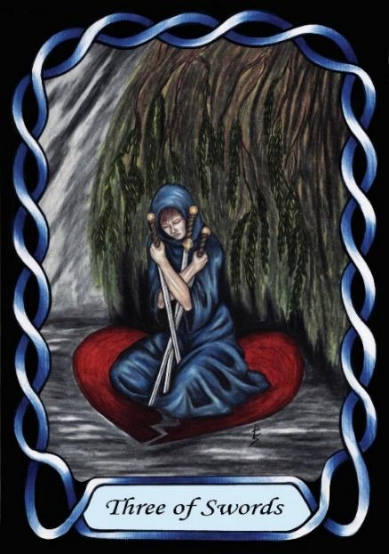

Three of Swords



Sign |
|
Seven: Relationships |
|
Sign Ruler |
|
Element |
Air - interaction |
Modality |
|
Symbol |
Scales |
Decan |
|
Decan Ruler |
|
Time |
Oct 4 - 13 |
Society Libra II
A Journeyman of relationships understands people, how and why they behave as they do with others. The Saturnian rulership however leads them to use this knowledge for selfish ends, manipulating others for their own benefit. The Swords of knowledge easily hurt the emotions of others.
This character is often seen in American teenage movies and series, as the heartless pack leaders of the “in” crowd, who bully and torment others for their own amusement and to increase their own societal standing.
Goldschneider Personology
These Librans can be what most expect from a Libra: charming, witty social butterflies, but it is usually just a mask. Their social skills are strong, and so the mask comes easy to them. They can easily see through the masks of others, and can be skilful manipulators. Look at their Moon sign and others to see to what use they will put their social skills to. On the negative side, they can be the archetypal shallow manipulative bitch with no concept of boundaries.
RWS Imagery
Head rules Heart. Intellect rules compassion. With an innate understanding of others, these Librans can easily manipulate others. However, this understanding rarely brings comfort, and can result in selfish or anti-social use of their ability. Their Saturn nature denies empathy and sympathy
Summary
The Swords represents the manipulative and selfish aspects of relationships, where intellectual understanding is used to control others, often masking shallow or hurtful intentions, highlighting the tension between compassion and self-interest.